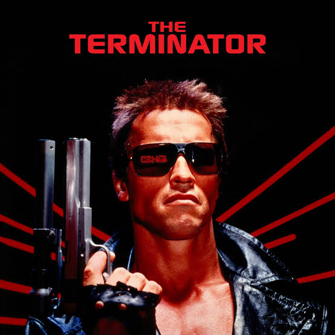

The Terminator (1984) is a sci-fi action film about an unstoppable cyborg assassin (Arnold Schwarzenegger) sent from 2029 to 1984 to kill Sarah Connor (Linda Hamilton). Her unborn son is destined to lead humanity against Skynet, a rogue AI, prompting a human soldier, Kyle Reese, to travel back to protect her.
Key Aspects of the Movie:
Plot: The Terminator, a
Characters: Sarah Connor (target), Kyle Reese (protector), and the Terminator (killer).
Themes: Artificial intelligence, time travel, human-machine relationships, and fate.
Production: Directed by James Cameron, the film is known for its intense, low-budget tech-noir style and its iconic, relentless antagonist.
The Terminator is a landmark in science fiction cinema, blending thrilling action with thought-provoking themes about technology and humanity. Its success spawned a franchise of sequels, TV series, comics, and video games, cementing its place as a cultural icon.
Fictional Background
Origin: Created by Skynet, an artificial intelligence in a post-apocalyptic future (2029) to be an "infiltrator" and assassin against the human resistance.
The 1984 Villain: In the original film, he is sent to kill Sarah Connor to prevent the birth of resistance leader John Connor. He is ultimately destroyed in a hydraulic press by Sarah.
The 1991 Hero ("Uncle Bob"): In Terminator 2: Judgment Day, a different T-800 is captured and reprogrammed by the future John Connor. It is sent back to protect the young John Connor from the liquid-metal T-1000.
Reprogrammed Personality: Once its learning ability is activated, it learns to understand human behaviors, catchphrases ("Hasta la vista, baby"), and develops a fatherly bond with John.
Fate: It destroys the T-1000 but sacrifices itself by lowering itself into molten steel to prevent its technology from being used to create Skynet.
Reprisals and Variations
Terminator 2: Judgment Day (1991): A T-800 is re
Terminator 3: Rise of the Machines (2003): An upgraded T-850 is sent to protect John and his future wife, Kate Brewster.
Terminator Genisys (2015): A T-800 called "Pops" or "Guardian" is sent back to 1973 to raise Sarah Connor, serving as her protector and surrogate father.
Terminator: Dark Fate (2019): After fulfilling its mission to kill John Connor in 1998, this T-800 becomes self-aware, takes the name "Carl," and establishes a human life with a family before helping Sarah destroy another terminator.
Portrayal and Impact
Actor: Arnold Schwarzenegger has appeared in all six Terminator films, either physically or via CGI (in Salvation).
Catchphrases: The character is known for "I'll be back" (original film) and "Hasta la vista, baby" (sequel).
Cultural Legacy: The American Film Institute ranked the Terminator #22 villain and #48 hero in its "100 Heroes & Villains" list.
| budget | box office |
|---|---|
| $11 million | $78.4 million |
| $102 million | $520.9 million |